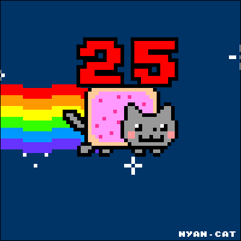

Teoria: a)Uwagi na temat JS
-kiedy powstała - W 1995r.
-dlaczego jest to język skryptowy - JavaScript jest przede wszystkim językiem skryptowym – to znaczy interpretowanym. Nie musi
zostać skompilowany do kodu maszynowego, aby można było zobaczyć efekty jego działania.
-gdzie jest wykonywany JS (kliet lub serwer) - O olbrzymiej popularności języka zadecydowały z pewnością jego uniwersalność oraz fakt, iż pozwala
on na odciążenie serwerów i ograniczenie ilości zbędnych danych przesyłanych pomiędzy nimi a
przeglądarką klienta. Najprostszym przykładem tych zalet mogą być choćby sklepy internetowe,
których nieodzownym elementem są formularze wypełniane przez użytkownika
-dlaczego jest to bezpieczne narzędzie - Ze względów bezpieczeństwa JavaScript ma znacznie ograniczone
uprawnienia dostępu do zasobów komputera, przy użyciu którego przeglądana jest dana strona, a
wszelkie odwołania do funkcji i obiektów wykonywane są w trakcie wykonywania programu.
-czy jest to język obiektowy , jeśli tak to dlaczego. - Jest jezykiem obiektowym. Określa on sposoby dostępu oraz zmiany zawartości i parametrów poszczególnych elementów
struktury strony. Dzięki niemu do dokumentów HTML mogą mieć dostęp wszystkie typy przeglądarek
i języków programowania. b)
Tworzy przycisk, który otwiera nowe okno przeglądarki lub nową kartę.
window.open("obraz.html","okienko","toolbar=no,directories=no,menubar=no,height=280,width=160,top=200,left=200");
Otwiera obraz, nie pokazuje paska narzędzi, ukrywa przyciski katalogów, ukrywa menu przeglądarki, wysokość 280px, szerokość 160px,położenie okna względem góry ekranu 200px, położenie okna względem lewej strony ekranu 200px.
toolbar=no - wartość yes lub no (1 lub 0): pokazuje lub ukrywa standardowy pasek narzędzi directories=no - wartość yes lub no (1 lub 0): pokazuje lub ukrywa przyciski katalogów menubar=no - wartość yes lub no (1 lub 0): pokazuje lub ukrywa menu przeglądarki height=280 - wartość w pixelach (1 lub 0): ustawia wysokość okna width=160 - wartość w pixelach (1 lub 0): ustawia szerokość okna top=200 - wartość w pixelach : ustawia położenie okna względem góry ekranu left=200 - wartość w pixelach : ustawia położenie okna względem lewej strony ekranu
window.close()
Służy do zamknięcia aktualnego okna.
